class: center, middle # EE-462 UTILIZATION OF ELECTRICAL ENERGY # Synchronous Machine Drives ## Ozan Keysan ## [keysan.me](http://keysan.me) ### Office: C-113 <span class="meta">•</span> Tel: 210 7586 --- # A Not Very Short Review ## [EE362 Presentations](http://keysan.me/ee362/) --- # Equivalent Circuit 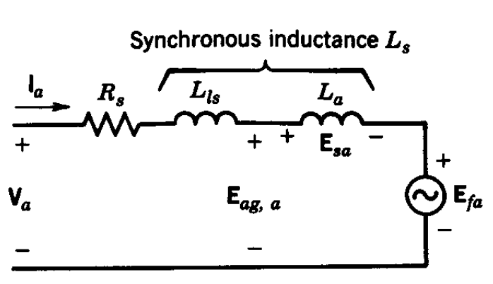 --- # Phasor Diagrams 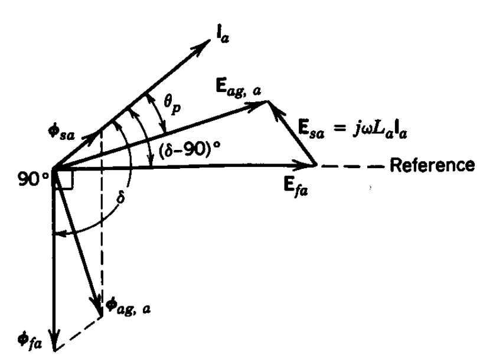 --- # Phasor Diagrams 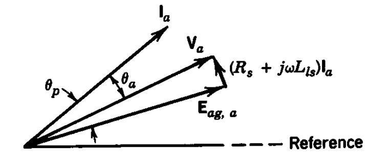 --- # Maximum Torque ## Load Angle is 90 degrees 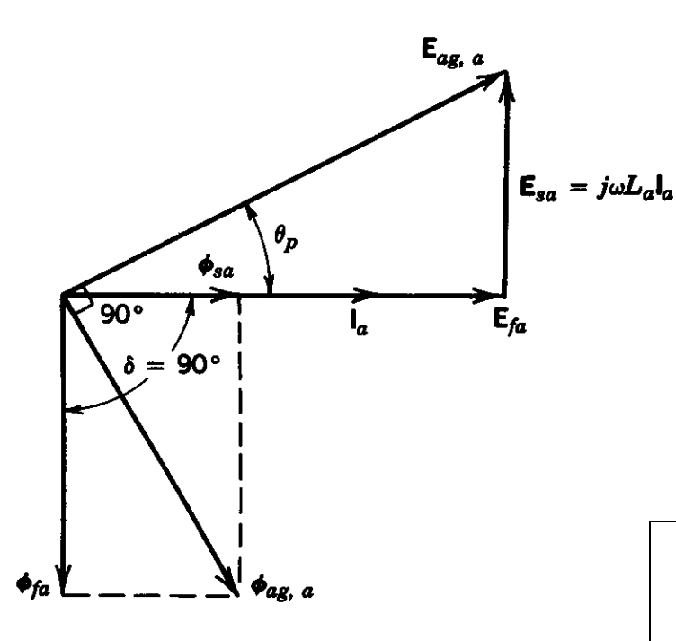 --- ## Can you notice the similarity to DC Motor? --- # Sinusoidal Synchronous Motor Drives 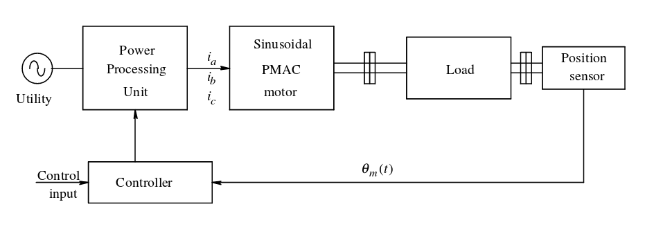 ## Notice the position sensor ### Required to adjust the angle between current and flux --- # Sinusoidal Synchronous Motor Drives ## A detailed look 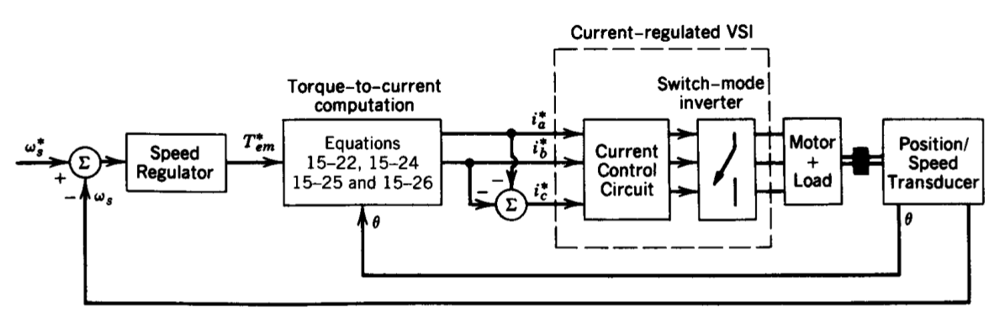 ## Current is kept within tolerances --- ## Current Regulated VSI -- 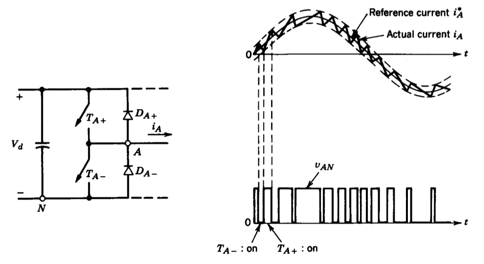 --- ## Current Regulated VSI <img src="./images/ee462/current_regulated_vsi2.png" alt="Drawing" style="width: 750px;"/> --- ## Current Regulated VSI 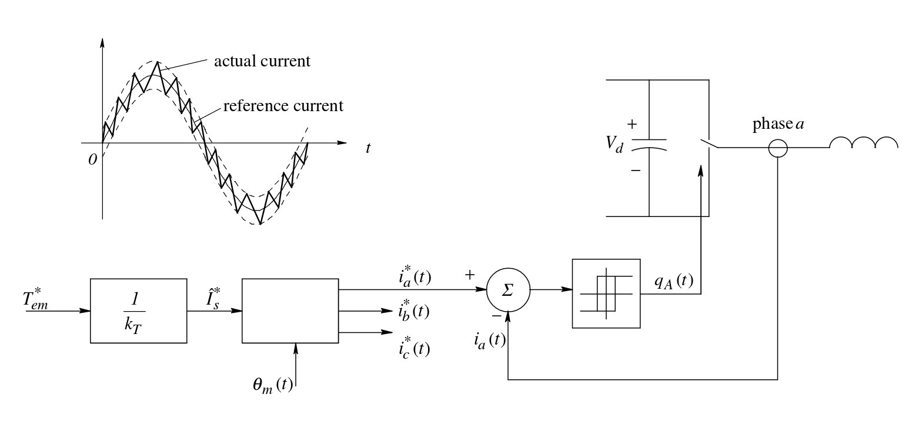 ### Current magnitude is controlled while keeping the load angle at 90 degrees. --- ### Similarities between a DC motor and Synchronous Machines -- ## DC Motor 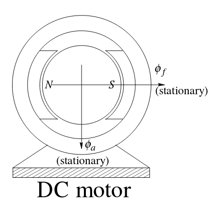 ### Stationary flux is produced by field windings (or by PM) ### Armature flux is kept 90 degrees apart with the commutator (brushes). --- ### Similarities between a DC motor and Synchronous Machines ## Brushless DC Motor (Synchronous Motor) 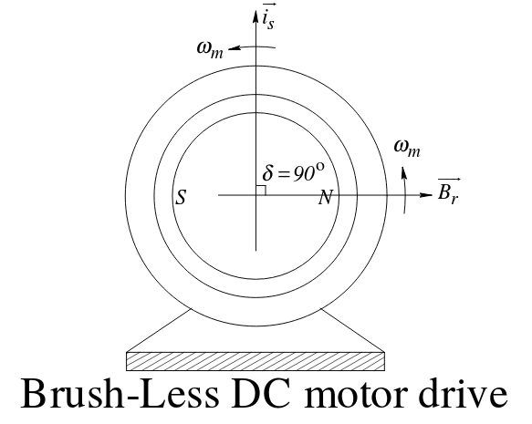 ### Rotating flux is produced by the field windings in the rotor. ### Another rotating flux is generated by the stator windings, and kept at the same speed and at 90 degrees by the power processing unit. --- # Speed Sensors ### Three options: -- - ## Resolver - ## Encoder - ## Hall Effect Sensor --- # Resolver <img src="https://www.amci.com/index.php/download_file/view_inline/2415/" alt="Drawing" style="width: 750px;"/> --- # Resolver <img src="http://img.directindustry.com/images_di/photo-g/16190-2744411.jpg" alt="Drawing" style="width: 600px;"/> --- # Encoder <img src="http://s3.amazonaws.com/robotc-wiki/wiki-images/thumb/2/22/Encoder_diagram.png/300px-Encoder_diagram.png" alt="Drawing" style="width: 650px;"/> --- # Encoder <img src="https://upload.wikimedia.org/wikipedia/commons/a/a1/Encoder_incremental_Dynapar_B58N.jpg" alt="Drawing" style="width: 500px;"/> --- # Hall Effect Sensor <img src="https://cdn.sparkfun.com/assets/8/1/c/7/8/5260259e757b7f9d538b456d.png" alt="Drawing" style="width: 500px;"/> --- # Position Sensor Comparison <img src="https://abm-website-assets.s3.amazonaws.com/ecnmag.com/s3fs-public/legacyimages/ECN/Articles/Microchip%20Figure%202-101309.jpg" alt="Drawing" style="width: 800px;"/> --- ## Brushless DC Motors (BLDC) <img src="https://images-na.ssl-images-amazon.com/images/I/51m3FKS3-3L.jpg" alt="Drawing" style="width: 500px;"/> --- ## Difference between BLDC and PMSM? -- ## Trapezoidal Back EMF (BLDC) ## Sinusoidal Back EMF (PMSM) --- ## Difference between BLDC and PMSM? <img src="https://abm-website-assets.s3.amazonaws.com/ecnmag.com/s3fs-public/legacyimages/ECN/Articles/Microchip%20Figure%201-101309.jpg" alt="Drawing" style="width: 600px;"/> --- # PMSM -- - ### Fed with sinusoidal currents -- - ### Continuous Stator Flux Position Variation -- - ### Less harmonics (current, torque) -- - ### Lower core loss -- - ### Higher switching losses --- # BLDC -- - ### Fed with direct currents -- - ### Stator Flux Position Commutation at each 60 degrees -- - ### Torque Ripple at commutation -- - ### Higher core losses due to harmonic content -- - ### Less switching losses --- ## BLDC Motors --- ## BLDC Commutation sequence 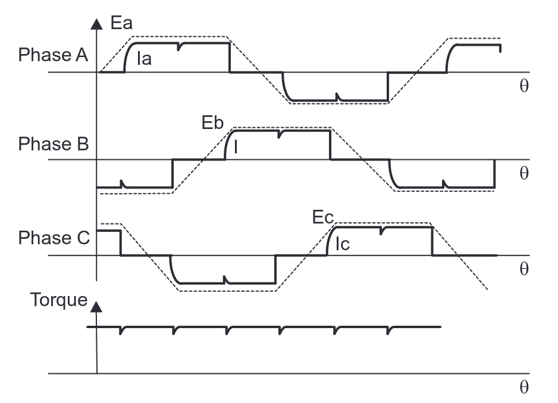 [Reference TI Application Notes](http://www.ti.com/lit/an/sprabq6/sprabq6.pdf) --- ## BLDC Commutation sequence <img src="https://e2e.ti.com/resized-image/__size/550x0/__key/communityserver-blogs-components-weblogfiles/00-00-00-07-88/7711.rajne-2.png" alt="Drawing" style="width: 750px;"/> --- ## BLDC Inverter 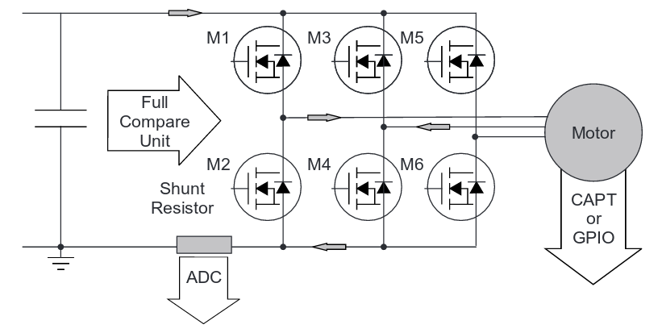 [Reference TI Application Notes](http://www.ti.com/lit/an/sprabq6/sprabq6.pdf) --- # Large Synchronous Motor Drives --- # Cycloconverters --- # Synchronous Reluctance Motors --- ## You can download this presentation from: [keysan.me/ee462](http://keysan.me/ee462)